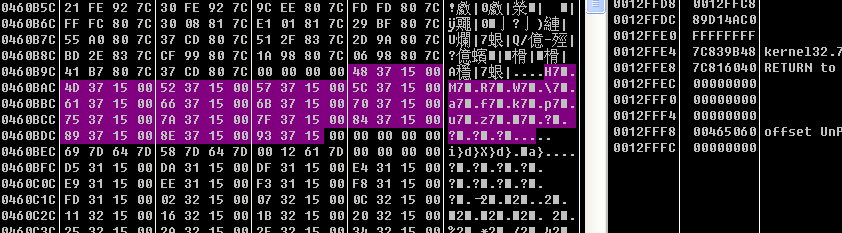

开始补习之前没有学习完的内容 就是学期刚开始看的《OD从0开始cracking》
用od加载程序 发现了pushad 然后就用ESP定律了
在esp地址处下硬件断点
接下来运行程序 就看到跳转到OEP的指令了
但运行到指令处发现跳转的地址会使程序崩溃
看一下程序崩溃在哪里 查看程序的SEH链
我们可以看到刚刚安装的异常处理程序入口地址为46590B,不出意外的话到达该异常处理程序,随后就会到达OEP,我们给第一个区段设置内存访问断点,触发异常后,随即我们就会到达OEP处。
运行后就发现到达OEP处了
接下来进行脱壳 用OllyDump直接脱壳 不过这里我们不选择重建输入表 因为要自己计算IAT等数据 将脱壳后的程序保存下来 发现是无法运行的 因为输入表没修正
接下来要计算导入表的信息 我们用4271d6处的kernel32.GetVersion来获取导入表的信息 在这里查看数据窗口的内容
接下来在内存中看看属于哪个模块
可以看到是属于kernel32模块的
看到460BA8这里已经变成150000的部分了
这部分一共就这么大 查看后发现它不属于任何一部分 应该是由壳创建的

下来计算IAT的大小 我们翻到上面 看到460810位8000008 不是IAT 上面是600000的部分了 Ctrl+R也发现没有引用的地方 所以IAT的起始位置就是460818
接下来看看IAT的结束位置 我们看到460F2C处的6C50000B Ctrl+R也还是发现没有引用的地方 所以 IAT的最后一项就是460F24
现在我们已经全部知道信息了 下来计算
OEP：4271B0-400000=271B0
RVA：460818-400000=60818
IAT的大小：460F28-460818=710
将这三个值填到IMP REC中去
单击Get Imports按钮
这里我们可以看到有296项被IMP REC标识为了无效,我们来试试IMP REC内置的Tracer能不能修复这些项。如果单击右边的Auto Trace(自动跟踪)按钮的话,IMP REC将被挂起(像卡死了一样)。我们再来试试其他的Tracer,首先单击右边的Show Invalid,接着在显示出来的无效项上面单击鼠标右键选择-Trace Level1(Disasm)。
可以看到这里提示所有无效项均被修复,嘿嘿,我们再次单击Show Invalid,可以看到所有的项都被标记为有效。
单击Fix Dump对刚刚dump出来的文件yodadump.exe进行修复 接下来就可以运行了
下来看看如何定位该壳的关键跳 首先程序停在OEP处 接着随便定位一个重定向过的IAT项。
我们给460ECC这一项设置硬件写入断点,接着如果我们重启OD的话,硬件断点依然存在。
当460ECC地址处被写入的时候OD就会断下来,我们直接运行起来